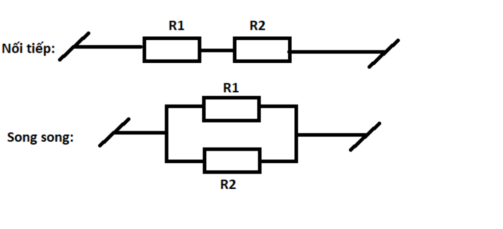

GIỚI THIỆU BÀI THỰC HÀNH
Trong bài học này, chúng ta sẽ thực hành cách sử dụng đồng hồ vạn năng (multimeter) để đo hiệu điện thế (voltage) giữa hai điểm trong một mạch điện đơn giản gồm 2 điện trở R1 và R2 mắc nối tiếp.
SƠ ĐỒ MẠCH ĐIỆN
Mạch điện bao gồm nguồn 5V từ Arduino, kết nối với hai điện trở R1 và R2. Chúng ta sẽ đo hiệu điện thế trên từng điện trở.

CÁC BƯỚC THỰC HIỆN
- Chuẩn bị đồng hồ: Chuyển thang đo của đồng hồ vạn năng sang chế độ đo điện áp DC (V-).
- Kết nối que đo: Đặt que đỏ vào điểm có tiềm thế cao hơn và que đen vào điểm có tiềm thế thấp hơn.
- Đo R1: Đặt hai đầu que đo song song với hai chân của điện trở R1.
- Đo R2: Tương tự, đặt hai đầu que đo song song với hai chân của điện trở R2.
- Kiểm tra: Tổng hiệu điện thế trên R1 và R2 sẽ bằng hiệu điện thế nguồn (xấp xỉ 5V).